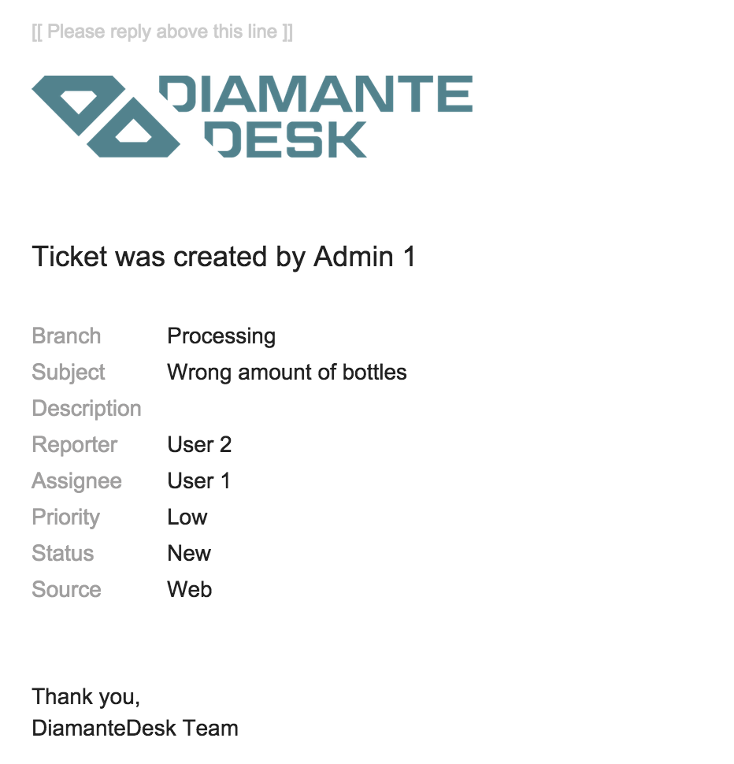
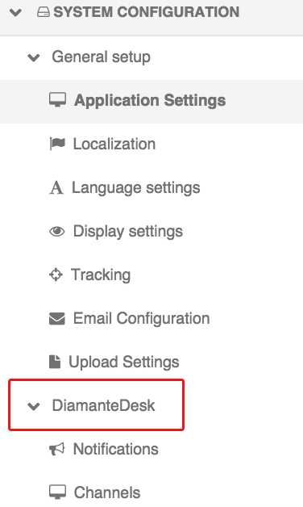

Tickets
DiamanteDesk is a comprehensive help desk, built using the OpenSource software. This tool is a great way to improve customer experience by easily receiving, reassigning and taking care of any Client requests presented in tickets.
Tickets can be viewed and added at:
- the Branches tab (see Branches section);
- the All Tickets tab.
Ticket Filters
All the tickets on this screen can be filtered according to the number of various parameters:
1) A user can view tickets according to the categories they belong to.
- All tickets category allows viewing all tickets created in the system.
- My tickets category filters all the tickets created by the account owner.
- My new tickets category filters all the tickets recently created by the account owner.
- My open tickets category allows viewing all open tickets created by the account owner.
- Reported tickets
- New reported tickets
2) Tickets in each category can be also filtered by the following parameters:
Note: Each of the parameters is set to All values by default. To change this value, click the down arrow next to to the specific filter that shall be changed.
Create a New Ticket
To create a new ticket, complete the following steps:
- Click Create Ticket at the top right corner of the screen. Create Ticket screen opens.
- Select the branch from the drop-down list.
- Specify the short summary of a ticket in the Subject field.
- Select the status of a ticket.
- Select the priority of a ticket.
- Select the Source of the ticket. Every service user has 4 available options to contact the Help Desk team: by creating a request through a Web form or through the embedded form on a website (optional), as an Email notification, via a Phone call.
- Select the Reporter from the drop-down list. Reporter is an administrator who can create a ticket for any customer.
- To select the Assignee, click Unassigned. A Search Panel opens. Start entering the name of the person to be assigned and the system will provide hints with the matching results or click a list image to open a list of all available assignees.
- In case there is a file that shall be attached to the ticket (image or document), click Choose file in the File filed and select the required file from your local machine.
- Provide the description of a ticket in the Description field.
- Click Save or Save and Close at the right top corner of the screen for a corresponding action.
Notifications
Email Notifications is a DiamantDesk feature that sends automatic emails to the ticket creator and assignee when the ticket is created or its status changes. This way a customer is notified whether his request is being processed.
When the ticket is created, a reporter and assignee get the following emails, informing them about ticket branch, subject, priority, status and source:

When the status of a ticket changes, the reporter and assignee get the following email, informing them about changes performed and the person responsible for them:
Configuring Notifications
This functionality can be configured according to the customers’ needs at System > Configuration. On the left side side of the screen on the System configuration pane select Notifications tab in the DiamanteDesk menu.

Notifications tab opens.
To use the default settings, select the Use Default check box in the Email Notifications field.
To edit the configurations, clear the the Use Default check box and set the Enable Email Notifications field to Yes or No option.
To save the changes made, click Save Settings on the left top corner of the screen.
Server Setup
The mailer settings for emails and notifications are usually configured during DiamanteDesk installation. To learn more about the process of installation, navigate to the Installation Guide section of the documentation.
To make sure that server parameters are configured correctly or you need to change them, define required configuration details in the app/config/parameters.yml file. If you need more information on how to perform configurations in the app/config/parameters.yml file, follow this link.